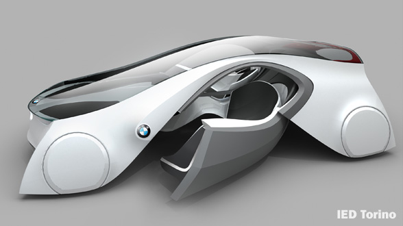

Impressioni
Il sito dello IED mostra una particolare efficenza nel descrivere, o portare alla vista tutte le informazioni necessarie all'utente per vedere il loro lavoro e tutto il sudore creato dal loro sistema d'insegnamento, mostrando sia info che progetti ben fatti. La home si rispecchia davvero ben fatta e con grande impatto visivo, programmata in modo efficente e con grande corpo e semplicità; mostrando tutta la capacità creativa del rinomato IED.
La pecca viene però quando si clicca nelle sezioni, coi relativi pulsanti; infatti si apre una pagina completamente apparte con sistemazioni grafiche totalmente diverse dalla home, se non per i colori rispettosamente tenuti; ma mostrando tutti i difetti di questa nuova impostazione. I pulsanti e le sezioni sono confusionarie e poco leggibili, funzionano per risoluzioni più grandi ma quelle più piccole (già da 1024) lasciano una barra inferiore per il prolungamento della pagina, mostrando un po' incompetenza da parte dei creatori dello IED in queste piccole rifiniture di visualizzazione che sono la colonna portante per chi naviga nel web e per chi deve leggere.
La grafica interna è molto semplice, ma allo stesso tempo, come già detto, confusionaria infatti è possibile cliccare un pulsante e far comprarire i contenuti da tutt'altra parte, lasciando un senso di disiorentamento all'utente.
Allo stesso tempo però una volta trovate le informazioni necessarie, si riesce a trovare risposte suadenti a quelle che sono le richieste personali da me richieste.
Bisgonerebbe in definitiva fare un restyling completo della parte interna del sito, in modo che sia più fluida e leggibile, e soprattutto rivalutare le parti di risoluzione che non sono state inserite in precedenza. In un tablet o smartphone con tecnologia android il sito diventa ancor più illeggibile e fa perder la voglia di leggerlo ancor prima di scoprirlo davvero.
I loro lavori sono di alto design e grande impatto visivo. Sono mostrati all'interno del sito e danno all'utente una veloce infarinatura di quello che sono gl'insegnamenti da loro concessi agli studenti che s'iscrivono al loro corso.
Seppur la loro quota d'iscrizione è davvero alta, si compensa con la preparazione dei loro allievi che è di alto livello quanto il costo dei loro corsi.
Ci si aspetta molto da codesta scuola e dai loro lavori così come mostra il loro sito.